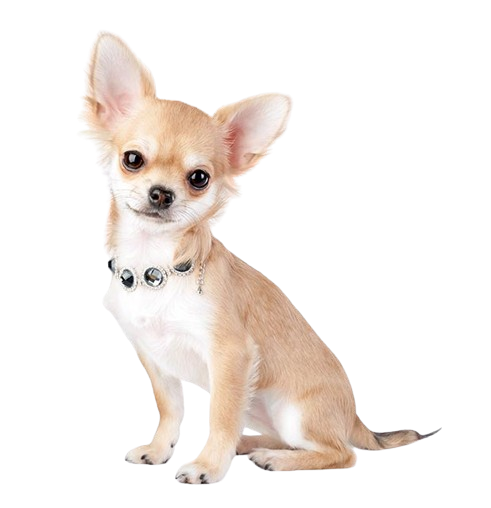

Max
3 years old
Male
10 Kilograms
Beagle
Introducing Max, a delightful Chihuahua who is eager to brighten your days! This tiny dog is extremely loving and full of charm. Max is a little guy, but he has a large heart and wants to be your faithful friend. Max is always ready for an adventure, whether it's going for hikes or snuggling on the couch. Vet vetted and vaccinated, he is ready to go to his permanent home. Get in touch with us at PAWS for Love to integrate Max into your house right now!